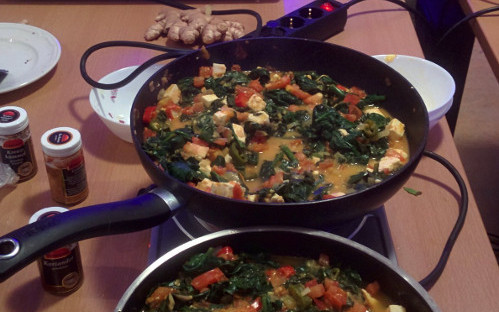

Palak Paneer
April 1, 2017
Palak Paneer ist ein indisches Curry, mit Paneer, Spinat und Tomaten. Caveat emptor: statt Paneer haben wir der Einfachheit halber Feta genommen.
Menge: 4 Portionen

Zutaten:
- 4 EL Pflanzenöl
- 1 Feta, gewürfelt
- 200 g Zwiebeln, fein geschnitten
- 1-2 Knoblauchzehen, fein geschnitten
- 1 TL Kreuzkümmel, ganz
- 4 Tomaten, fein gehackt
- 1⁄2 TL Chilipulver oder 2-3 frische Chilis
- 1⁄2 TL Kurkuma
- 1 1⁄2 TL Salz
- 350 g Spinat, fein gehackt
- 1⁄2 TL Korianderpulver
- 2 cm Ingwer, frischer, in Streifen geschnitten
- etwas Zitronensaft
- Reis
Zubereitung:
Öl in der Pfanne erhitzen und Kreuzkümmel leicht anroesten. Zwiebeln, Knoblauch und Chilis dazugeben und glasig anbraten.
Tomaten, Ingwer, Salz, Kurkuma dazugeben und Tomaten für 5 Minuten einkochen.
Den Spinat dazugeben und ebenfalls einkochen.
Feta unterheben.
Mit Koriander und Zitronensaft abschmecken.
Dazu Reis servieren und etwas Baguette reichen.